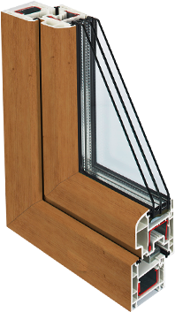
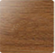
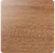
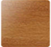
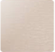
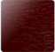
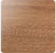
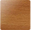

Цветные пластиковые окна
Ламинируем профиль ПВХ для придания окнам цвета и фактуры дерева
Создайте выразительный интерьер с цветными окнами REHAU

Ирландский дуб
Подберите цвет для своих окон
      Больше 50 вариантов цветов и фактур спрашивайте
у наших замерщиков
или отправить заявку и получить консультацию
Зачем использовать ламинацию
Чтобы придать внешнему виду окна оригинальную выразительность, специалисты применяют ламинацию - прием, при помощи которого можно декорировать свое жилье с учетом самых современных веяний дизайнерского искусства.При помощи ламинации оконного профиля можно, например, со всей точностью воспроизвести оттенки и структуру древесины: при этом обеспечивается полная визуализация натурального дерева, точно имитирующая расположение волокон. Помимо имитации деревянных поверхностей, применяют пленку самых разных цветов и фактур.
Алена,
Договор № 09.10.33512.13
Дата размещения: 13 декабря 2013 года
Поставили нам окна во всей квартире. Все очень понравилось)))компания на 5+.Все очень любезные, гибкая система скидок!!!бууд советовать всем!!!Сервис был на высоте, во-первых с поставкой получилось быстрее, во-вторых два раза приезжал замерщик Алексей,ему большое спасибо... прочитать полностью оставить отзыв